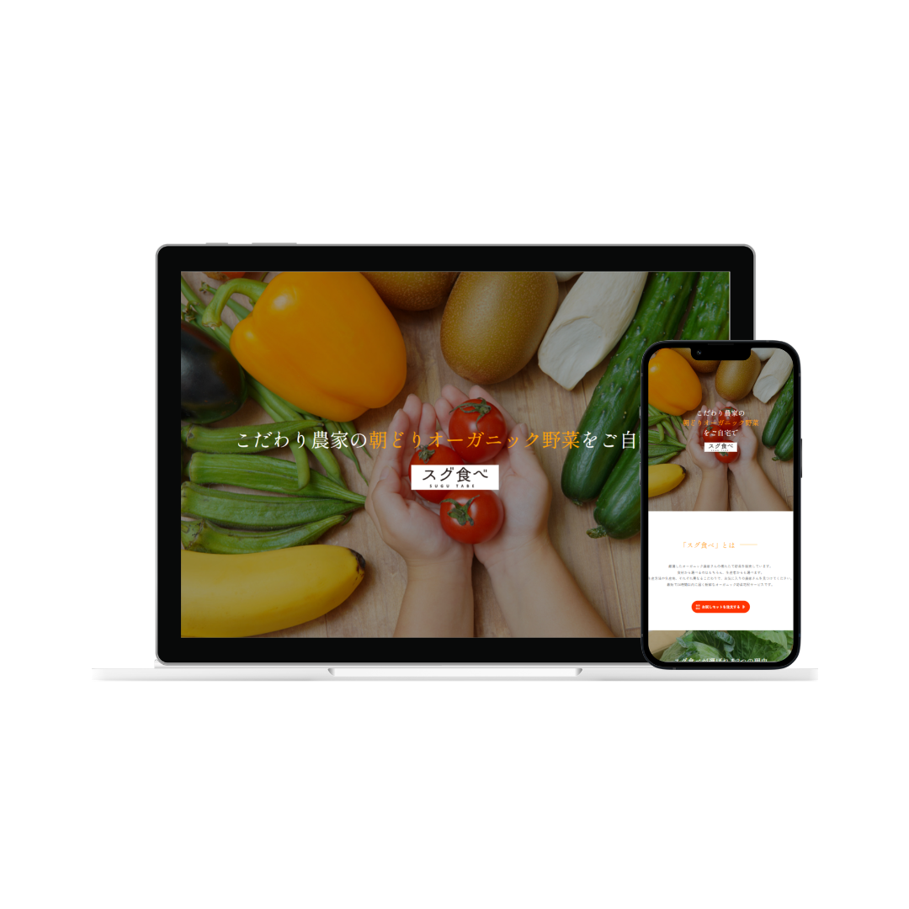
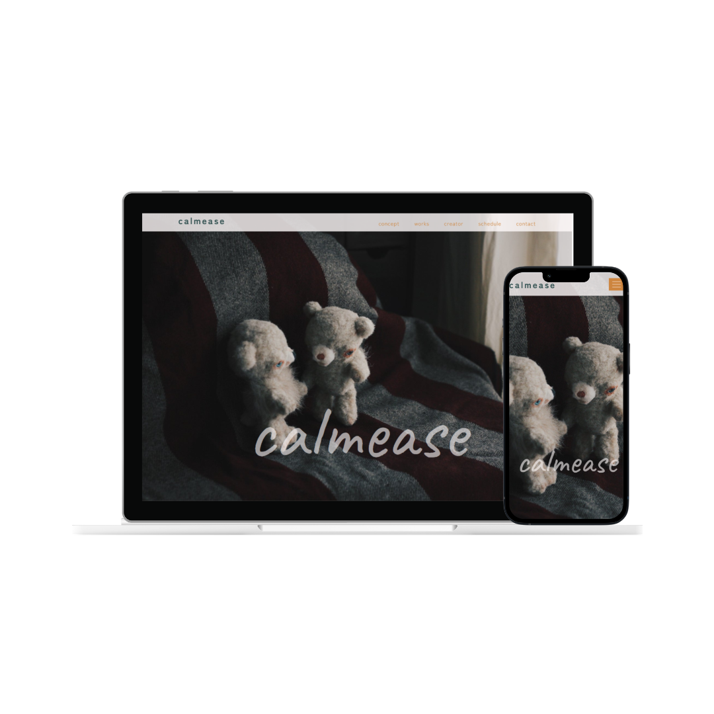

Web制作ポートフォリオ
HTML / CSS / JavaScript
Figma / Photoshop（Photopea）
About制作について
HTML/CSSを中心にWebサイト制作を学習してきました。
制作ではユーザー目線を意識し、見やすさや使いやすさを考えながら取り組んでいます。
Webサイト制作を通して更新機能やフォームなどの仕組みにも興味を持ち、
現在はWebサイトの機能面や運用面への理解を深め、より使いやすいサイト制作ができるよう学習を進めています。
Works制作物

スグ食べ （架空LP）
オーガニック食品の魅力を伝え、
お試し購入へ導くことを目的としたLP
制作期間：約3週間（12月上旬～12月下旬）
ワイヤー 1週間 / デザイン 1週間 / コーディング 1週間
詳細を見る
制作背景
スクールの中間課題として、ヒアリング内容をもとにLP制作を行いました。
目的
食にこだわりのあるユーザーに向けてサービスの魅力を伝え、 お試し購入へ導くこと
ターゲット
食の安全や品質に関心が高く、「ていねいな暮らし」を大切にする層
工夫した点
- ・「新鮮さ・安心感・信頼感」が伝わるよう、ナチュラルで清潔感のあるデザインを意識
- ・ファーストビューでサービスの特徴が伝わる構成とし、CTAボタンを目立つ位置に配置
- ・スマートフォンでの閲覧を意識し、視認性や操作性にも配慮
改善案
- ・ユーザーの購入判断を後押しするための利用者の評価（★など）や具体的な利用シーンを追加
- ・CTAの配置やデザインを検証・改善

calmease（作品紹介サイト）
ハンドメイド作品の
魅力を伝えるための紹介サイト
制作期間：約2ヶ月（12月下旬～2月下旬）
ワイヤー 2週間 / デザイン 4週間 / コーディング 2週間
詳細を見る
制作背景
卒業制作課題として友人が制作したぬいぐるみ作品の魅力を、写真だけでは伝えきれないため、
世界観やコンセプトを丁寧に表現することを目的として制作しました。
目的
作品の世界観やコンセプトを伝え、ECサイトやイベントへの導線を作ること
ターゲット
ハンドメイド作品やぬいぐるみに興味があり、 日常の中で癒しやこだわりを大切にする20代以上の層
工夫した点
- ・作品コンセプトである「落ち着き」や「安心感」を表現するため、 落ち着いた配色と余白を意識
- ・作品を生活に取り入れた際のイメージが伝わるよう、 視覚的に分かりやすい構成
改善案
- ・作品数が増えた際に備え、カテゴリ分けや検索機能を追加
- ・ECサイトへの導線をより明確にする
Goals今後の目標
現在はJavaScriptを中心にNode.jsの学習を進めており、Webサイトの更新や運用を支える仕組みへの理解を深めています。
今後はCMSの構築やカスタマイズに必要な知識や技術を身につけ、
ユーザーにとって使いやすく、運用する側にとっても扱いやすいWebサイト制作ができるよう取り組んでいきたいと考えています。